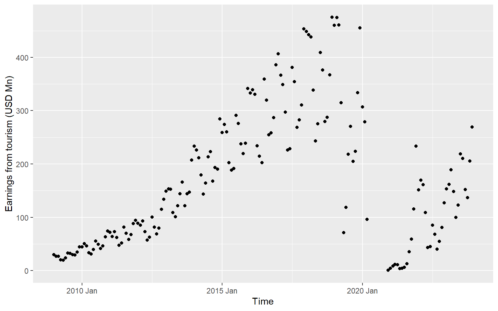
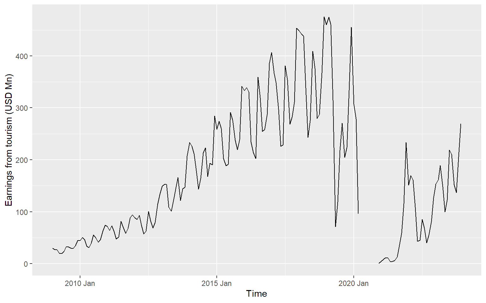
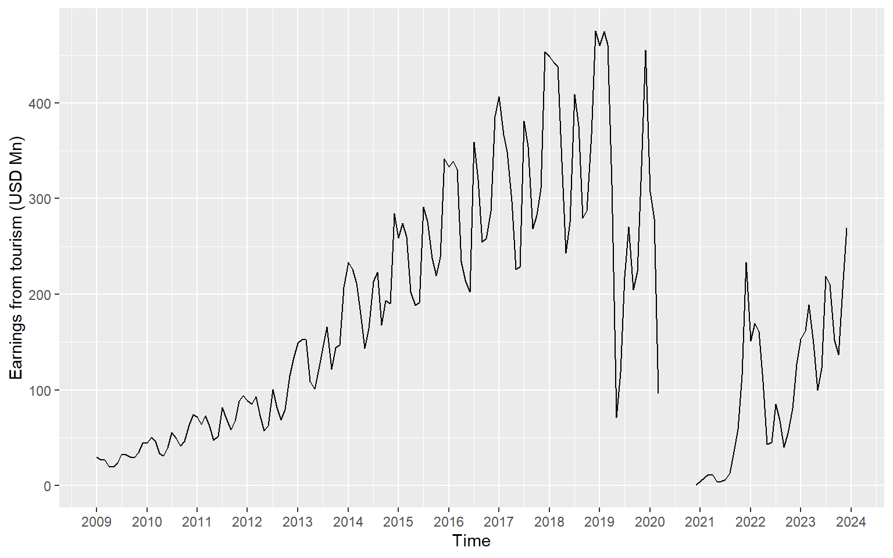
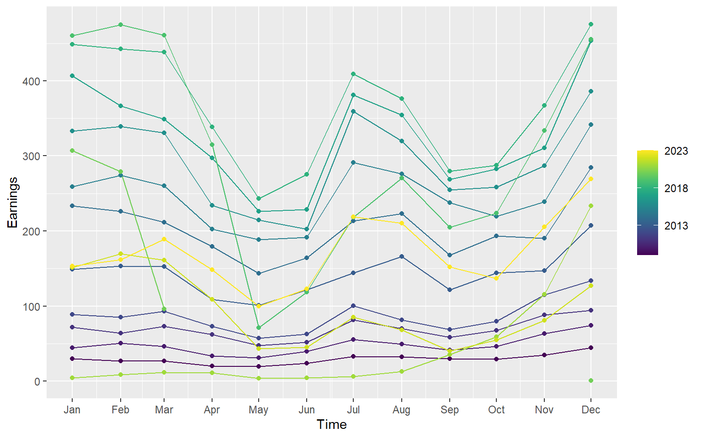
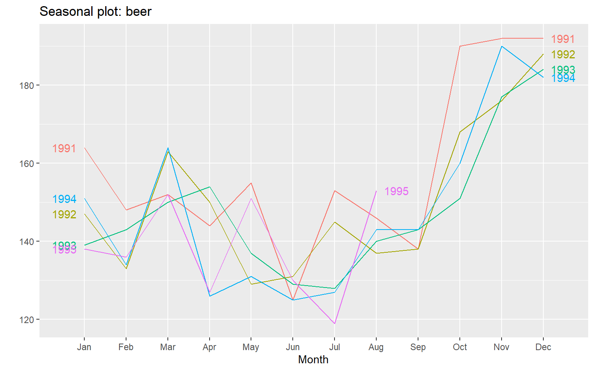
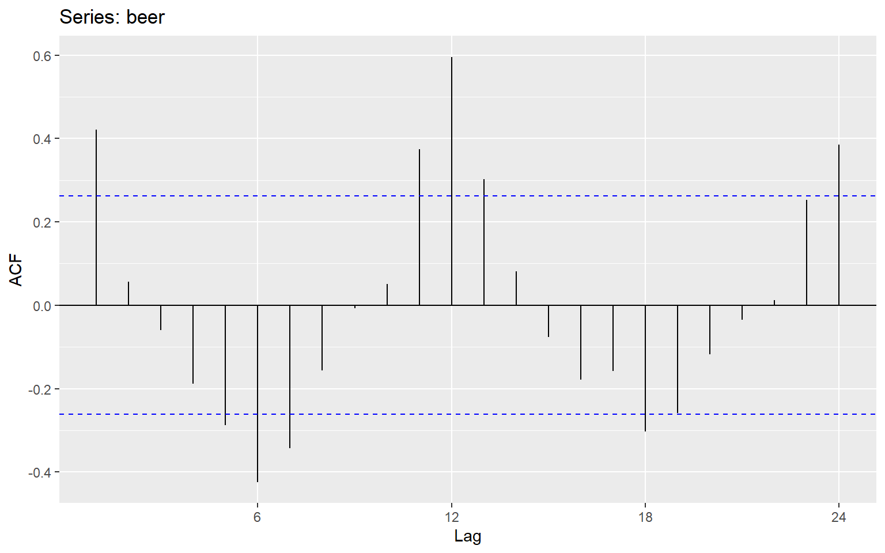
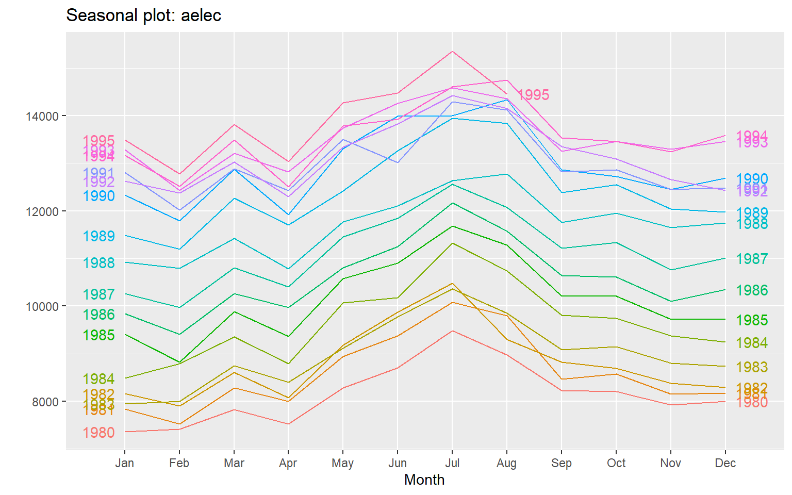
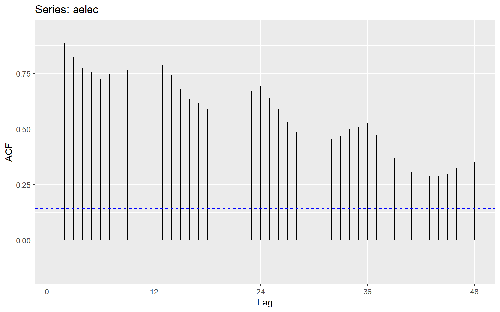
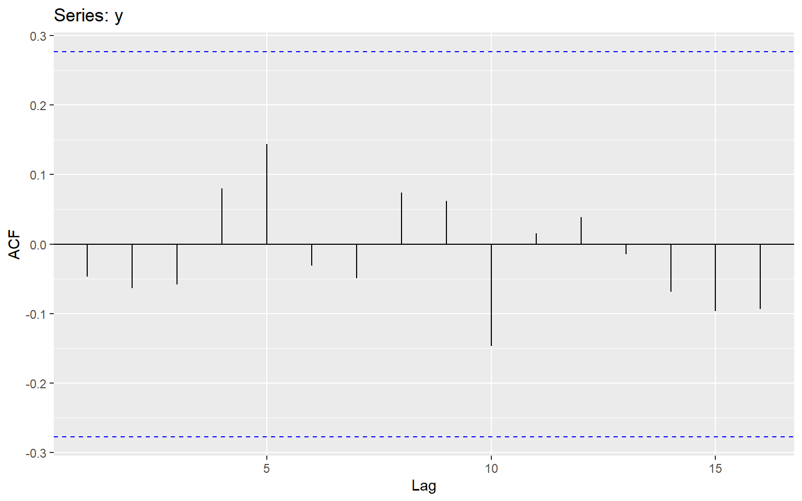

| Data | Frequency |
|---|---|
| Annual | 1 |
| Quarterly | 4 |
| Monthly | 12 |
| Weekly | 52 |
2 Introduction to Time Series Analysis
2.1 Time series
A time series is a sequence of observations recorded in time order. The time intervals between observations can be regular (e.g., daily, monthly, yearly) or irregular (e.g., magnitude of a earthquake at a particular location).
2.2 Main Time Series Patterns
Trend
Long-term increase or decrease in the data.
Seasonal
A seasonal pattern exists when a series is influenced by seasonal factors (e.g., the quarter of the year, the month, or day of the week).
Seasonality is always of a fixed and known period.
Cyclic
A cyclic pattern exists when data exhibit rises and falls that are not of fixed period.
The duration of these fluctuations is usually of at least 2 years.
The average length of cycles is longer than the length of a seasonal pattern.
2.3 Frequency of a time series (Seasonal periods)
Number of observations per natural time interval (Usually year, but sometimes a week, a day, an hour)
Single Seasonality
The time series exhibits one repeating pattern at a fixed frequency.
Example:
Monthly sales that peak every December (annual seasonality).
Multiple Seasonality
The time series exhibits more than one repeating pattern at different frequencies simultaneously.
Example:
Hourly electricity demand with a daily pattern (peaks every day at certain hours), a weekly pattern (weekdays vs weekends).
Website traffic with hourly variation and seasonal holiday peaks.
| Data | Minute | Hour | Day | Week | Year |
|---|---|---|---|---|---|
| Daily | NA | NA | NA | 7 | 365.25 |
| Hourly | NA | NA | 24 | 168 | 8766.00 |
| Half-hourly | NA | NA | 48 | 336 | 17532.00 |
| Minutes | 60 | 1440 | 1440 | 10080 | 525960.00 |
| Seconds | 60 | 3600 | 86400 | 604800 | 31557600.00 |
2.4 DataFrame for time series data: Python
When your DataFrame represents a time series, the index is usually the date or time, allowing pandas to:
Plot time series easily
Resample or aggregate data by time
Compute rolling statistics
# Import pandas
#py -m pip install pandas
import pandas as pd
# Define data
value = [100, 250, 78, 300, 500]
time = list(range(2015, 2020))
# Create DataFrame
df = pd.DataFrame({"Year": time, "Observation": value})
# Set 'Year' as index
df.set_index("Year", inplace=True)
# Display the DataFrame
print(df) Observation
Year
2015 100
2016 250
2017 78
2018 300
2019 500For data collected more often than once a year (e.g., monthly, weekly, or daily), it’s important to tell the computer that the index represents time. We do this by converting the index to a time or date type using a time-class function. This helps us sort, select, and analyze the data correctly over time.
# Sample monthly data
data = {
"Month": pd.date_range(start="2025-01-01", periods=6, freq="M"), # 6 months
"Sales": [120, 150, 170, 130, 180, 200]
}
# Create DataFrame
z = pd.DataFrame(data)
# Format Month as "Year Month" (e.g., "2025 Jan")
z["Month"] = z["Month"].dt.strftime("%Y %b")
# Set Month as index
z.set_index("Month", inplace=True)
# Display the DataFrame
print(z) Sales
Month
2025 Jan 120
2025 Feb 150
2025 Mar 170
2025 Apr 130
2025 May 180
2025 Jun 200
2.5 DataFrame for time series data: R
We use tsibbles to store data.
2.6 Dataset: R
# A tibble: 180 × 3
Month Year Earnings
<chr> <chr> <dbl>
1 January 2009 30
2 January 2010 44.7
3 January 2011 72
4 January 2012 88.9
5 January 2013 149.
6 January 2014 233.
7 January 2015 259
8 January 2016 333.
9 January 2017 407.
10 January 2018 448.
# ℹ 170 more rows# A tibble: 180 × 3
Month Year Earnings
<chr> <chr> <dbl>
1 January 2009 30
2 February 2009 26.7
3 March 2009 26.6
4 April 2009 20.3
5 May 2009 19.3
6 June 2009 23.6
7 July 2009 33
8 August 2009 32.2
9 September 2009 29.6
10 October 2009 29.3
# ℹ 170 more rowsy.earnings <- earnings |> mutate(Date = seq(ymd_hm("2009-1-1 0:00"), ymd_hm("2023-12-1 12:00"), by = "month"))
y.earnings# A tibble: 180 × 4
Month Year Earnings Date
<chr> <chr> <dbl> <dttm>
1 January 2009 30 2009-01-01 00:00:00
2 February 2009 26.7 2009-02-01 00:00:00
3 March 2009 26.6 2009-03-01 00:00:00
4 April 2009 20.3 2009-04-01 00:00:00
5 May 2009 19.3 2009-05-01 00:00:00
6 June 2009 23.6 2009-06-01 00:00:00
7 July 2009 33 2009-07-01 00:00:00
8 August 2009 32.2 2009-08-01 00:00:00
9 September 2009 29.6 2009-09-01 00:00:00
10 October 2009 29.3 2009-10-01 00:00:00
# ℹ 170 more rows# A tibble: 180 × 3
Earnings Date Time
<dbl> <dttm> <mth>
1 30 2009-01-01 00:00:00 2009 Jan
2 26.7 2009-02-01 00:00:00 2009 Feb
3 26.6 2009-03-01 00:00:00 2009 Mar
4 20.3 2009-04-01 00:00:00 2009 Apr
5 19.3 2009-05-01 00:00:00 2009 May
6 23.6 2009-06-01 00:00:00 2009 Jun
7 33 2009-07-01 00:00:00 2009 Jul
8 32.2 2009-08-01 00:00:00 2009 Aug
9 29.6 2009-09-01 00:00:00 2009 Sep
10 29.3 2009-10-01 00:00:00 2009 Oct
# ℹ 170 more rowsts.earnings <- y.earnings |>
select(Earnings, Time) |> as_tsibble(index=Time)
ts.earnings# A tsibble: 180 x 2 [1M]
Earnings Time
<dbl> <mth>
1 30 2009 Jan
2 26.7 2009 Feb
3 26.6 2009 Mar
4 20.3 2009 Apr
5 19.3 2009 May
6 23.6 2009 Jun
7 33 2009 Jul
8 32.2 2009 Aug
9 29.6 2009 Sep
10 29.3 2009 Oct
# ℹ 170 more rowsggts <- ts.earnings |>
ggplot(aes(x = Time, y = Earnings)) +
geom_point() +
labs(y = "Earnings from tourism (USD Mn)", x="Time")
ggts
ts.earnings <- y.earnings |>
select(Earnings, Time) |> as_tsibble(index=Time)
ts.earnings# A tsibble: 180 x 2 [1M]
Earnings Time
<dbl> <mth>
1 30 2009 Jan
2 26.7 2009 Feb
3 26.6 2009 Mar
4 20.3 2009 Apr
5 19.3 2009 May
6 23.6 2009 Jun
7 33 2009 Jul
8 32.2 2009 Aug
9 29.6 2009 Sep
10 29.3 2009 Oct
# ℹ 170 more rows2.7 Time series visualisation using grammar of graphics: R
The grammar of graphics is a way of thinking about plots as layers. Each plot is built from components like:
Data – the dataset you are plotting.
Aesthetics (aes) – how variables map to visual properties like x, y, color, or size.
Geometries (geom) – the type of plot (points, lines, bars, etc.).
Facets – split the plot into subplots based on a variable.
Statistics (stat) – summary computations like regression lines or counts.
Scales – control axis limits, colors, or sizes.
Coordinates (coord) – control coordinate system (Cartesian, polar).
Theme – control visual appearance like text, background, and grid.
ggts <- ts.earnings |>
ggplot(aes(x = Time, y = Earnings)) +
geom_point() +
labs(y = "Earnings from tourism (USD Mn)", x="Time")
ggtsggts <- ts.earnings |>
ggplot(aes(x = Time, y = Earnings)) +
geom_line() +
labs(y = "Earnings from tourism (USD Mn)", x="Time")
ggts
ts.earnings |>
mutate(Time = as_date(yearmonth(Time))) |>
ggplot(aes(x = Time, y = Earnings)) +
geom_line() +
scale_x_date(date_breaks = "1 year", date_labels = "%Y") +
labs(y = "Earnings from tourism (USD Mn)", x="Time") 
library(viridis)
ts.earnings |>
gg_season(Earnings, period = "1 year", pal = scales::viridis_pal()(15)) + geom_point() 
2.8 Dataset: Python
import plotnine as p9
from plotnine.data import economics2.9 Working with Built-in Data Set
import pandas as pd
import plotnine as p9
from plotnine import *
from plotnine.data import *
import numpy as np
economics date pce pop psavert uempmed unemploy
0 1967-07-01 507.4 198712 12.5 4.5 2944
1 1967-08-01 510.5 198911 12.5 4.7 2945
2 1967-09-01 516.3 199113 11.7 4.6 2958
3 1967-10-01 512.9 199311 12.5 4.9 3143
4 1967-11-01 518.1 199498 12.5 4.7 3066
.. ... ... ... ... ... ...
569 2014-12-01 12122.0 320201 5.0 12.6 8688
570 2015-01-01 12080.8 320367 5.5 13.4 8979
571 2015-02-01 12095.9 320534 5.7 13.1 8705
572 2015-03-01 12161.5 320707 5.2 12.2 8575
573 2015-04-01 12158.9 320887 5.6 11.7 8549
[574 rows x 6 columns]economics.info()<class 'pandas.core.frame.DataFrame'>
RangeIndex: 574 entries, 0 to 573
Data columns (total 6 columns):
# Column Non-Null Count Dtype
--- ------ -------------- -----
0 date 574 non-null datetime64[ns]
1 pce 574 non-null float64
2 pop 574 non-null int64
3 psavert 574 non-null float64
4 uempmed 574 non-null float64
5 unemploy 574 non-null int64
dtypes: datetime64[ns](1), float64(3), int64(2)
memory usage: 27.0 KBCreate year and month columns
economics['year'] = economics['date'].dt.year
economics['month'] = economics['date'].dt.month
economics date pce pop psavert uempmed unemploy year month
0 1967-07-01 507.4 198712 12.5 4.5 2944 1967 7
1 1967-08-01 510.5 198911 12.5 4.7 2945 1967 8
2 1967-09-01 516.3 199113 11.7 4.6 2958 1967 9
3 1967-10-01 512.9 199311 12.5 4.9 3143 1967 10
4 1967-11-01 518.1 199498 12.5 4.7 3066 1967 11
.. ... ... ... ... ... ... ... ...
569 2014-12-01 12122.0 320201 5.0 12.6 8688 2014 12
570 2015-01-01 12080.8 320367 5.5 13.4 8979 2015 1
571 2015-02-01 12095.9 320534 5.7 13.1 8705 2015 2
572 2015-03-01 12161.5 320707 5.2 12.2 8575 2015 3
573 2015-04-01 12158.9 320887 5.6 11.7 8549 2015 4
[574 rows x 8 columns]2.10 Time series visualisation using grammar of graphics: Python
The grammar of graphics is a way of thinking about plots as layers. Each plot is built from components like:
Data – the dataset you are plotting.
Aesthetics (aes) – how variables map to visual properties like x, y, color, or size.
Geometries (geom) – the type of plot (points, lines, bars, etc.).
Facets – split the plot into subplots based on a variable.
Statistics (stat) – summary computations like regression lines or counts.
Scales – control axis limits, colors, or sizes.
Coordinates (coord) – control coordinate system (Cartesian, polar).
Theme – control visual appearance like text, background, and grid.
2.11 What is a lag value?
In time series analysis, a lag represents the number of time steps by which a series is shifted backward to compare it with itself.
Lag 1: Compare each value with the previous observation.
Lag 2: Compare each value with the value two steps before.
Lag k: Compare each value with the value k steps earlier.
import pandas as pd
# Small time series with 5 points
data = [10, 12, 13, 15, 14]
dates = pd.date_range(start='2025-01-01', periods=5, freq='D')
df = pd.DataFrame({'Date': dates, 'Value': data})
df.set_index('Date', inplace=True)
# Create lagged series
df['Lag1'] = df['Value'].shift(1) # lag 1
df['Lag2'] = df['Value'].shift(2) # lag 2
# Show the result
print(df) Value Lag1 Lag2
Date
2025-01-01 10 NaN NaN
2025-01-02 12 10.0 NaN
2025-01-03 13 12.0 10.0
2025-01-04 15 13.0 12.0
2025-01-05 14 15.0 13.02.12 Correlation vs Autocorrelation
Correlation
Measures the strength of the linear relationship between two variables
r = \frac{\sum_{i=1}^{n} (x_i -\bar{x})(y_i-\bar{y})}{\sqrt{\sum_{i=1}^{n} (x_i -\bar{x})^2 \sum_{i=1}^{n} (y_i -\bar{y})^2}}
Autocorrelation
Measures the strength of linear relationship between lagged values of time series.
r_k = \frac{\sum (y_t -\bar{y})(y_{t-k}-\bar{y})}{\sum (y_t -\bar{y})^2}
2.13 Your turn: why different values?
# Correlation (autocorrelation) between original series and lagged series
autocorr_lag1 = df['Value'].corr(df['Lag1'])
autocorr_lag2 = df['Value'].corr(df['Lag2'])
print(f"Autocorrelation at lag 1: {autocorr_lag1:.3f}")Autocorrelation at lag 1: 0.744print(f"Autocorrelation at lag 2: {autocorr_lag2:.3f}")Autocorrelation at lag 2: 0.655import pandas as pd
import numpy as np
import matplotlib.pyplot as plt
from statsmodels.tsa.stattools import acf
# Small time series with 5 points
data = [10, 12, 13, 15, 14]
dates = pd.date_range(start='2025-01-01', periods=5, freq='D')
df = pd.DataFrame({'Date': dates, 'Value': data})
df.set_index('Date', inplace=True)
print(df) Value
Date
2025-01-01 10
2025-01-02 12
2025-01-03 13
2025-01-04 15
2025-01-05 14# Compute autocorrelation for lags 1 to 4 (max lag = n-1)
autocorr_values = acf(df['Value'], nlags=4, fft=False)
# Show autocorrelation values
for lag, val in enumerate(autocorr_values):
print(f"Lag {lag}: {val:.3f}")Lag 0: 1.000
Lag 1: 0.349
Lag 2: -0.141
Lag 3: -0.481
Lag 4: -0.2272.14 Autocorrelation plots (ACF)
The ACF measures the correlation between a time series and lagged versions of itself. It tells us how past values influence current values.
Example 1
Time series plot
Seasonal plot
ggseasonplot(beer, year.labels=TRUE, year.labels.left=TRUE)
ACF
ggAcf(beer)
ggseasonplot(beer, year.labels=TRUE, year.labels.left=TRUE)2.15 Example 2
Seasonal plots
ggseasonplot(aelec, year.labels=TRUE, year.labels.left=TRUE)
ggAcf(aelec, lag=48)
2.16 Example 3
ggAcf(y)
2.17 Exercise
Question 6 at https://otexts.com/fpp2/graphics-exercises.html